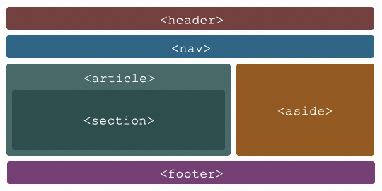

Se crea con el fin de brindar herramientas didacticas a los estudiantes las cuales faciliten su desarrollo en el ámbito tecnológico, más exactamente con HTML, en el tema especifico de las etiquetas semanticas y CSS Grid.
Etiquetas Semánticas
Las etiquetas semánticas ayudan a definir la estructura del documento y permiten que las páginas web sean mejor indexadas por los buscadores. Una etiqueta se califica como semántica si tiene que ver el significado, es decir, si nos informa sobre lo que trata su contenido. Por ejemplo, la etiqueta SECTION nos dice que contiene una sección o capítulo dentro de la página. Frente a las etiquetas semánticas tenemos otros tipos de etiquetas como las que afectan al formato, como UL, a multimedia, como VIDEO, etc
Algunos ejemplos de etiquetas semánticas son:
header,nav,section,article,aside,footer, entre otras.
Tomado de: HTML5, etiquetas semánticas. (2015, 1 junio). Aula Clic. https://www.aulaclic.es/articulos/html5-semantica_1.html

CSS Grid
Es un sistema de maquetación web que divide la página en una cuadrícula o rejilla (grid) a partir de la cual se pueden posicionar los diferentes elementos de manera más sencilla, versátil y coherente.Su practicidad y sus múltiples ventajas lo han convertido en un estándar. Es decir, casi cualquier navegador soporta e interpreta este tipo de código.La irrupción de CSS Grid, junto con Flexbox, supuso una revolución en el mundo de la programación web, ya que permitía realizar con mucho menos código elementos y estructuras que resultaban muy complejas o directamente imposibles.
Primeros pasos
1.Crea un bloque Contenedor
2.Activa CSS Grid
3.Define tu rejilla
4.Colocar los elementos en la rejilla
Tomado de: Mariño, M. (2019, 22 agosto). CSS Grid: ventajas y primeros pasos. El blog de dinahosting. https://dinahosting.com/blog/css-grid-ventajas-y-primeros-pasos/